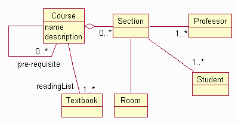

| Work Product Descriptor (Artifact): Analysis Class |
 |
|
| Container Artifact | |||
|---|---|---|---|
| Roles | Responsible: | Modified By: | |
| Input To | Mandatory: | Optional: | External:
|
| Analysis Classes specify elements of an early conceptual model for 'things in the system which have responsibilities and behavior'. They represent the prototypical classes of the system, and are a 'first-pass' at the major abstractions that the system must handle. Analysis classes may be maintained in their own right, if a "high-level", conceptual overview of the system is desired. Analysis classes also give rise to the major abstractions of the system design: the design classes and subsystems of the system. |
| Optional | |
|---|---|
| Planned |
| Representation Options | UML Representation: Class, stereotyped as <<boundary>>, <<entity>> or <<control>>. An analysis class may have the following properties:
The analysis classes, taken together, represent an early conceptual model of the system. This conceptual model evolves quickly and remains fluid for some time as different representations and their implications are explored. Formal documentation can impede this process, so be careful how much energy you expend on maintaining this 'model' in a formal sense; you can waste a lot of time polishing a model which is largely expendable. Analysis classes rarely survive into the design unchanged. Many of them represent whole collaborations of objects, often encapsulated by subsystems. Usually, simple note-cards, such as the example below, are sufficient (this is based on the well-known CRC Card technique - see [WIR90] for details of this technique). On the front side of the card, capture the name and description of the class. An example for a Course in a course registration system is listed below:
On the back of the card, draw a diagram of the class:
 Class diagram for Course There is one analysis class card for each class discovered during the use-case-analysis workshop. |
|---|
| Checklists | |
|---|---|
| Guidelines |
© Copyright IBM Corp. 1987, 2006. All Rights Reserved. |